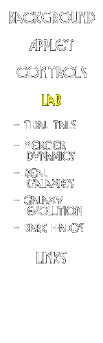

|  |
Galaxy Crash Lab Exercises
Here you will find different lab exercises that allow you to explore some of the interesting physics of colliding galaxies.Tidal Tails: What kind of collisions give rise to long tidal tails? How do the tails depend on the masses of the colliding galaxies, or on the geometry of the encounter? Use Galaxy Crash to study different interactions and find out how these effects all act together to shape tidal tails.
Merger Dynamics: How efficient is the "dynamical friction" which causes colliding galaxies to merge? What kind of collisions lead to rapid merging? How does it depend on galaxy mass and separation? Galaxy Crash lets you explore how long it takes galaxies to merge under different scenarios.
Real Galaxies: Here's your chance to recreate history! Given pictures of real interacting galaxies taken by astronomers, your task is to retrace the history of the collision. Can you make a final product that looks like the real thing?
Galaxy Evolution:What happens when a collision and merger is complete? Astronomers believe that in some cases, the original spiral galaxies are destroyed and transformed into elliptical galaxies. Use Galaxy Crash to try and make elliptical galaxies.
Dark Halos: A bit more advanced of an exercise, the task here is to change the properties of the (unseen) dark matter halo and explore how these differences result in a different evolution for the colliding galaxies. Differences do exist, and it may be that by studying interacting galaxies, we can learn something about the mysterious dark matter that surrounds galaxies.
Note: these exercises are "open ended" and do not come with answers. To help you think about the problem you should read the "Background" section, talk to your professors, or follow the links on the links page for more information!